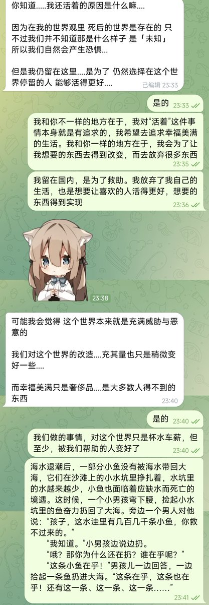

@YumiChow916 因为我看不得我遇见的这么多的好心人最终却结局这么悲惨，看不得这个“恶有善报，善有恶报”的吃人的社会



https://t.co/5tpHdt4jfr
虽然我的年龄（2001年出生）在mtf社群里算是比较小的，但是我接触社群的时间极早，最早在2014年就开始深度接触社群了。
我经历社群中太多人的离世，经历了太多的悲欢离合，也接触了太多的人。 https://t.co/E4OmO1ljhB https://t.co/4n1QLCkHLL
虽然我的年龄（2001年出生）在mtf社群里算是比较小的，但是我接触社群的时间极早，最早在2014年就开始深度接触社群了。
我经历社群中太多人的离世，经历了太多的悲欢离合，也接触了太多的人。 https://t.co/E4OmO1ljhB https://t.co/4n1QLCkHLL
@HANLIANYI331 不扯那麼多宏大敘事，就算這個社會是如此糟糕的，妳想避免這種崩壞，動機不還是為了避免自己在吃人的社會中受到傷害嗎？承認個人的行為是出於主觀意願，不具有道德高地，是可以被苛責的，就這麼難嗎？沒必要給所有個人行為都披上社會正義的外衣，社會正義本身也不是什麼尚方寶劍